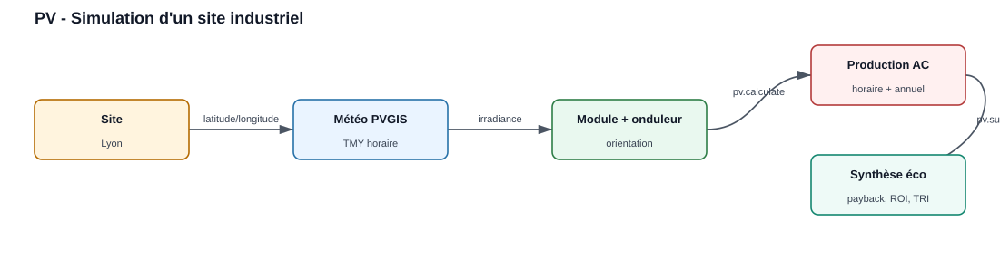
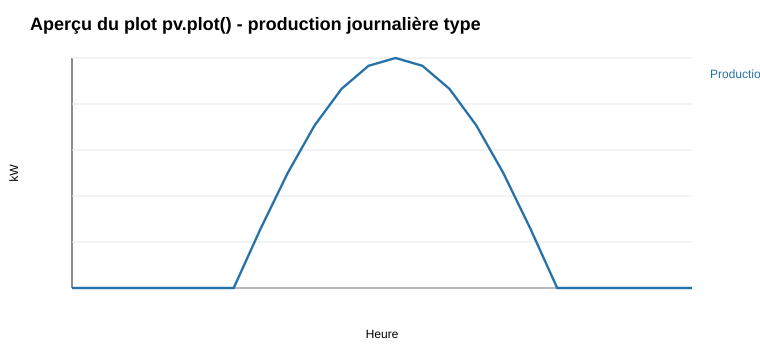
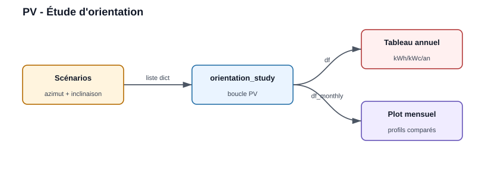
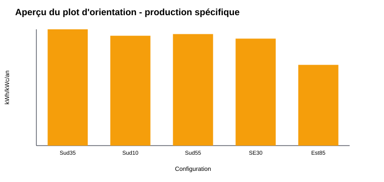

Production Photovoltaics — Examples
Example 1 : Simulation site industriel

Le site fournit la localisation, PVGIS fournit la météo, then pvlib calcule the production horaire et la synthèse économique.
from PV.ProductionElectriquePV import SolarSystem
pv = SolarSystem(
latitude=45.75, longitude=4.85,
name='Lyon', altitude=200,
timezone='Europe/Paris',
azimut=180, inclinaison=35
)
pv.retrieve_module_inverter_data(
module_name='Canadian_Solar_CS5P_220M___2009_',
inverter_name='ABB__MICRO_0_25_I_OUTD_US_208__208V_',
temperature_model='open_rack_glass_glass'
)
pv.calculate_solar_parameters()
print(pv.df)
# Synthese economique
print(pv.summary(
nb_modules=455, module_wc=220,
capex_eur_m2=155, opex_eur_m2=2,
tarif_elec_eur_mwh=120, duree_vie=25
))
# Graphique production horaire + mensuelle
pv.plot(nb_modules=455)
# Export Excel
pv.to_excel('Lyon_production.xlsx', nb_modules=455)
Results à afficher in le rapport :
Indicateur |
Example de valeur |
Unité |
|---|---|---|
Power installée |
100 |
kWc |
Surface capteurs |
environ 774 |
m2 |
Production spécifique |
environ 1 397 |
kWh/kWc/an |
Production annuelle |
environ 140 |
MWh/an |
Plots prévus by l’example :
pv.plot(nb_modules=455)affiche the production horaire AC et le profil mensuel.pv.to_excel(...)exporte les data horaires, mensuelles et la synthèse.

Aperçu de la forme attendue : power AC nulle la nuit, maximum autour du
milieu de journée, then cumul mensuel in le plot généré by pv.plot.
Example 2 : Étude paramétrique d’orientation

Chaque scénario d’orientation est simulé, then comparé in un tableau annuel et un graphe mensuel.
scenarios = [
{'nom': 'Sud 35', 'azimut': 180, 'inclinaison': 35},
{'nom': 'Sud 10', 'azimut': 180, 'inclinaison': 10},
{'nom': 'Sud 55', 'azimut': 180, 'inclinaison': 55},
{'nom': 'SE 30', 'azimut': 135, 'inclinaison': 30},
{'nom': 'Est 85', 'azimut': 90, 'inclinaison': 85},
]
df, df_monthly = SolarSystem.orientation_study(
latitude=45.75, longitude=4.85,
name='Lyon', altitude=200, timezone='Europe/Paris',
scenarios=scenarios
)
print(df)
# Graphique mensuel par orientation
SolarSystem.plot_orientation_study(df, df_monthly, name='Lyon')
Result attendu :
Configuration |
Azimut |
Inclinaison |
Result affiché |
|---|---|---|---|
Sud 35 |
180 deg |
35 deg |
scénario de référence |
Sud 10 |
180 deg |
10 deg |
comparaison toiture faible pente |
SE 30 |
135 deg |
30 deg |
perte liée à l’orientation |
Est 85 |
90 deg |
85 deg |
profil plus matinal |
Plot prévu by l’example :
SolarSystem.plot_orientation_study(...)affiche les profils mensuels par scénario, with the production annuelle in la légende.

Aperçu de comparaison : le tableau df donne le classement annuel et le
plot mensuel montre la saisonnalité de chaque orientation.